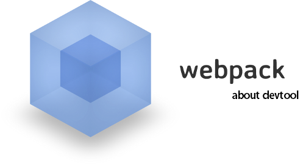
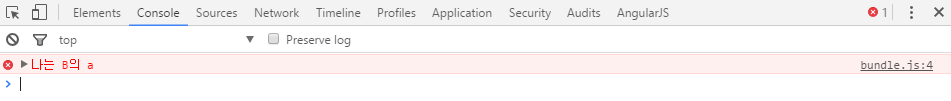
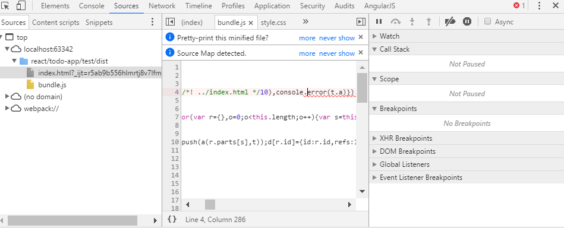
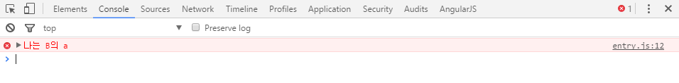
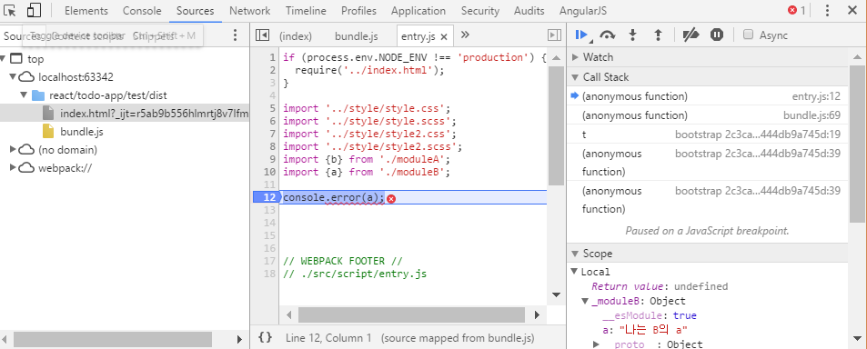
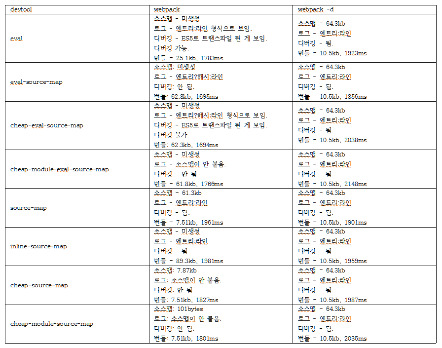
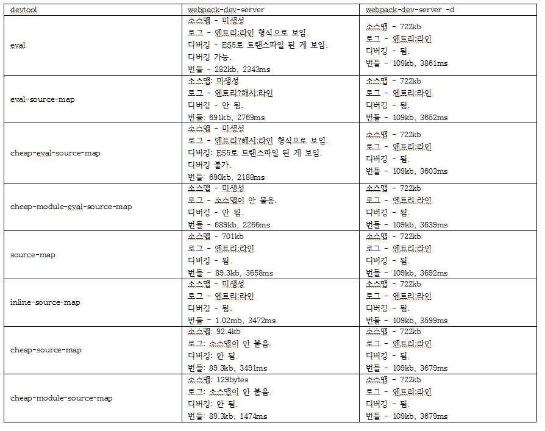

목차
들어가기에 앞서
이 포스트에서는 웹팩에 대한 기초 내용을 설명하지 않는다.
웹팩을 모르는 사람은 살포시 뒤로가기를 누르는 걸 권장한다.
소스맵
소스맵은 원본 소스와 난독화된 소스를 매핑해주는 방법 중 하나이다.
*.map 파일을 통해 제공되고, json 형태로 돼있다.
사진을 통해 한번 보자.




devtool
웹팩에서 devtool 옵션은 개발을 용이하게 하기 위해 소스맵을 제공하는 옵션이다.
하지만 devtool 옵션은 굉장히 많고, 그 중 8가지를 테스트 해봤다.
- eval
- eval-source-map
- cheap-eval-source-map
- cheap-module-eval-source-map
- source-map
- inline-source-map
- cheap-source-map
- cheap-module-source-map
또한 웹팩에는 배포용 설정과 개발용 설정이 따로 존재하고,
webpack 명령어와 webpack -d 명령어가 존재하는 등 총 32가지의 테스트를 해봤다.
먼저 배포용 설정 파일을 보자.
아래와 같은 설정이 들어있다.
- ES6 to ES5, 디버깅용 로그들 삭제, js 난독화((이걸 하지 않으면 소스맵이 제대로 붙지 않음.)
- css 난독화 및 소스맵 적용
- scss 난독화 및 소스맵 적용
- html 난독화
|
|

이제 개발용 설정 파일을 보자.
아래와 같은 설정이 들어있다.
- ES6 to ES5, js 난독화 (이걸 하지 않으면 소스맵이 제대로 붙지 않음.)
- css 난독화 및 소스맵 적용
- scss 난독화 및 소스맵 적용
- 핫 모듈 리플레이스먼트 적용(이 예제에서는 (s)css 파일만 적용됨)
- 핫 리로드 적용(이 예제에서는 js, html 파일만 적용됨)
|
|

마치며…
배포용은 용량이 가장 작은 cheap-module-source-map 옵션을 사용하고 webpack 명령어를 사용하는 게 가장 좋다.
개발용은 로그, 디버깅, 번들링 타임을 고려하면 inline-source-map 옵션을 사용하고 webpack-dev-server 명령어를 사용하는 게 가장 좋을 것 같다.
뭐 거의 비슷비슷 하므로 본인의 입맛에 맞게 찾아 쓰면 되겠다.
또한 devtool은 js 파일의 소스맵하고만 관련 있지, (s)css의 소스맵과는 무관하다.